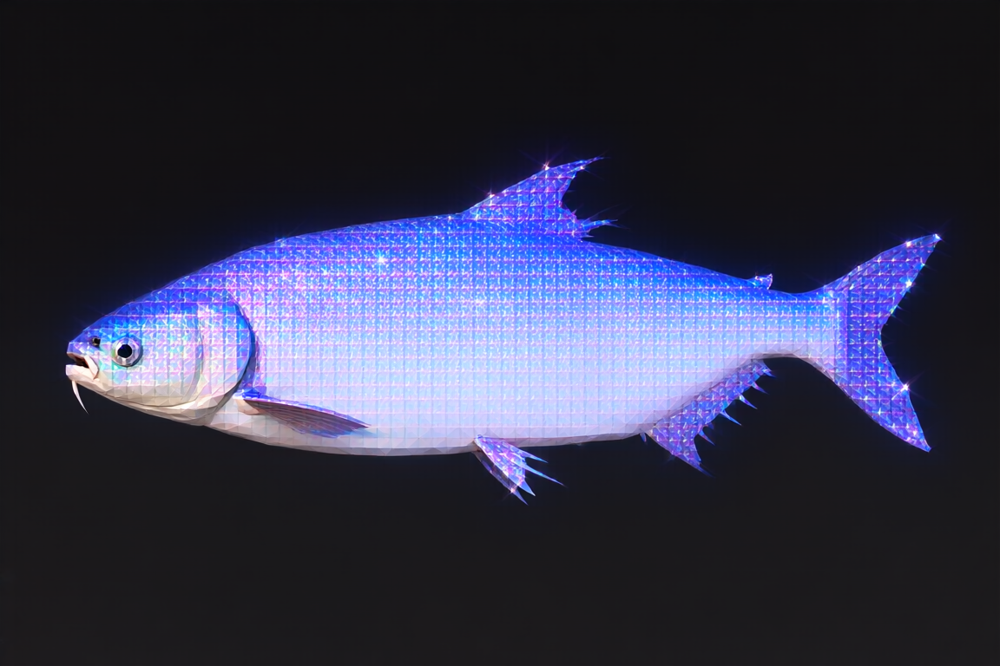
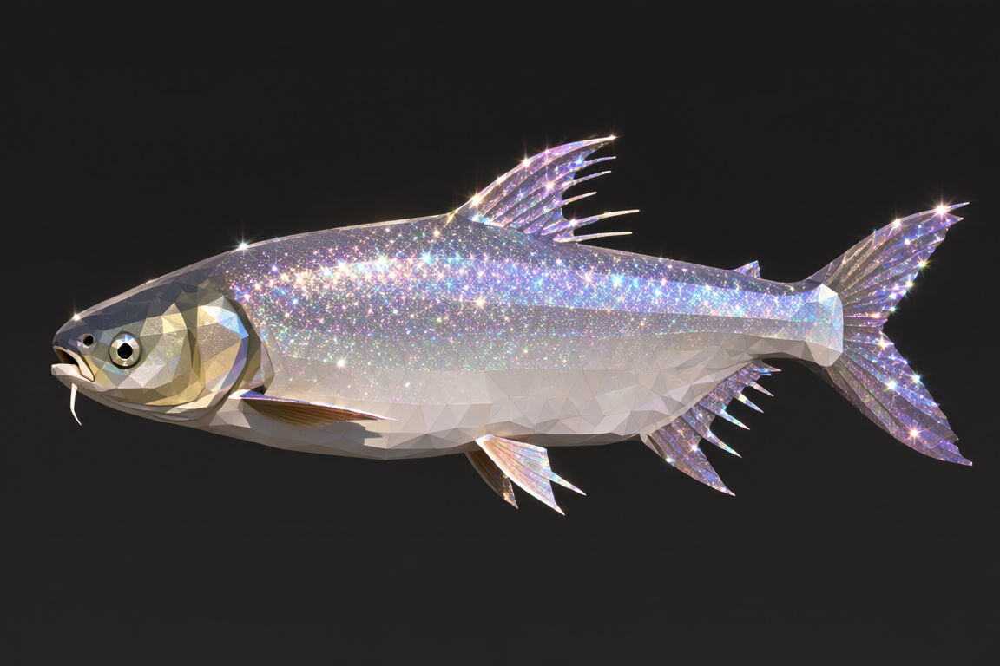
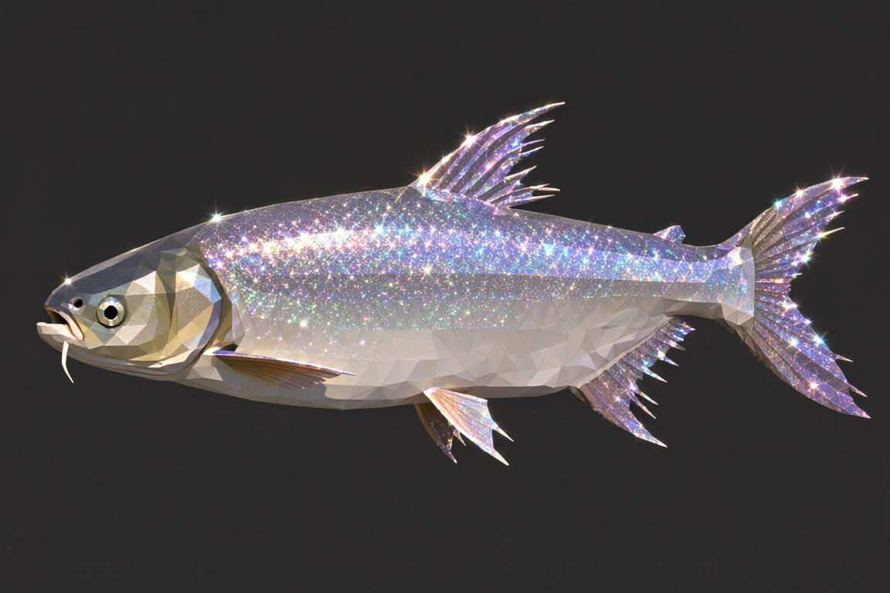
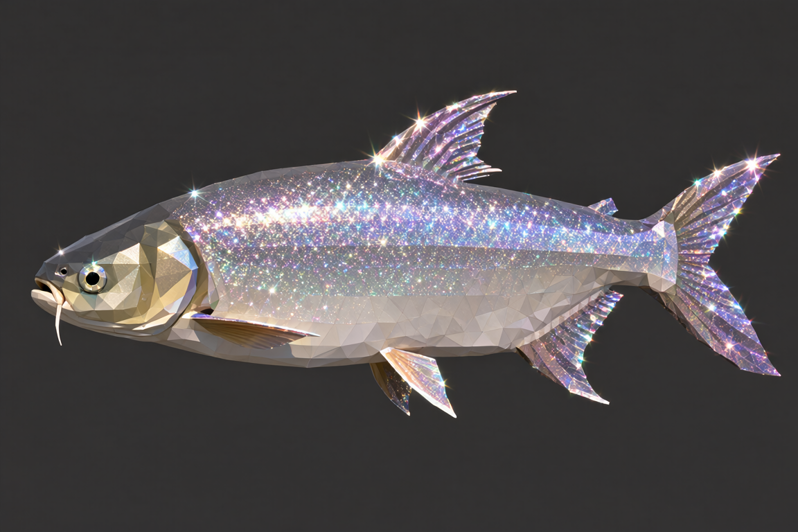
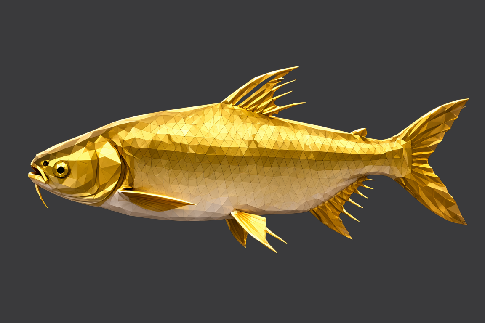
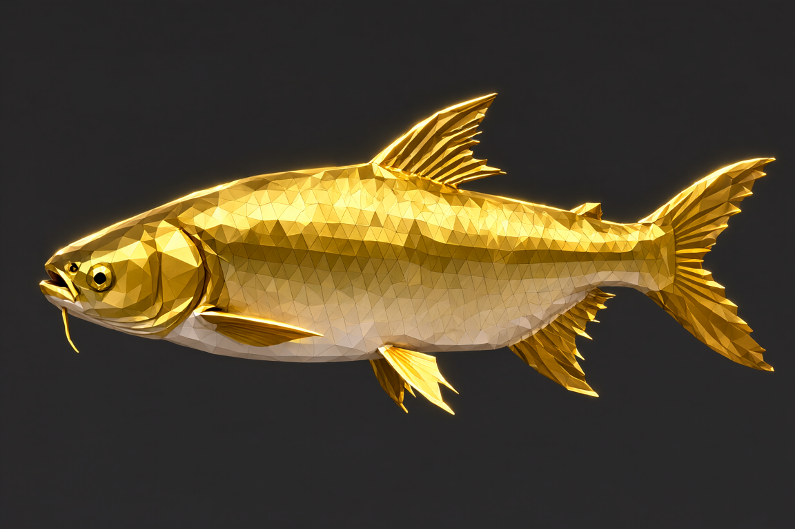
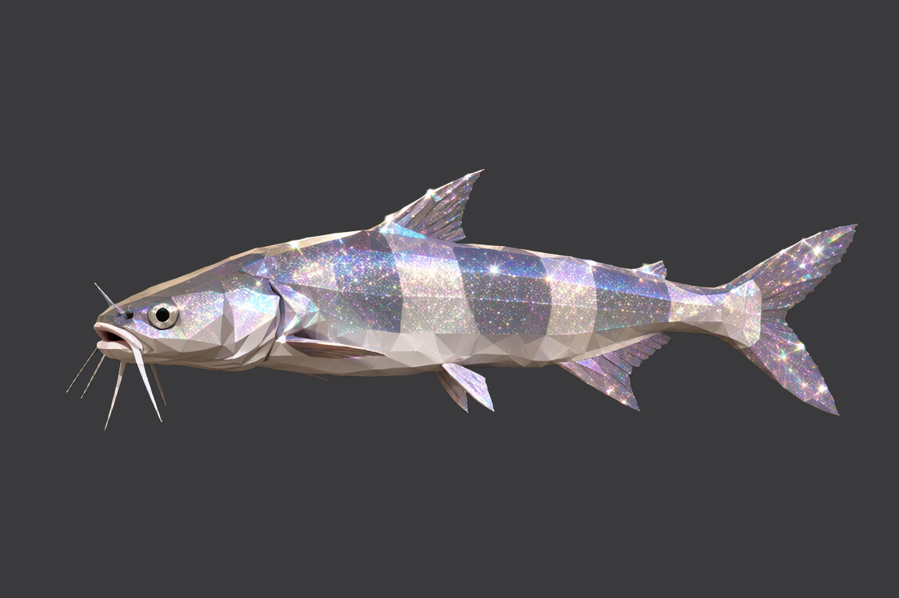
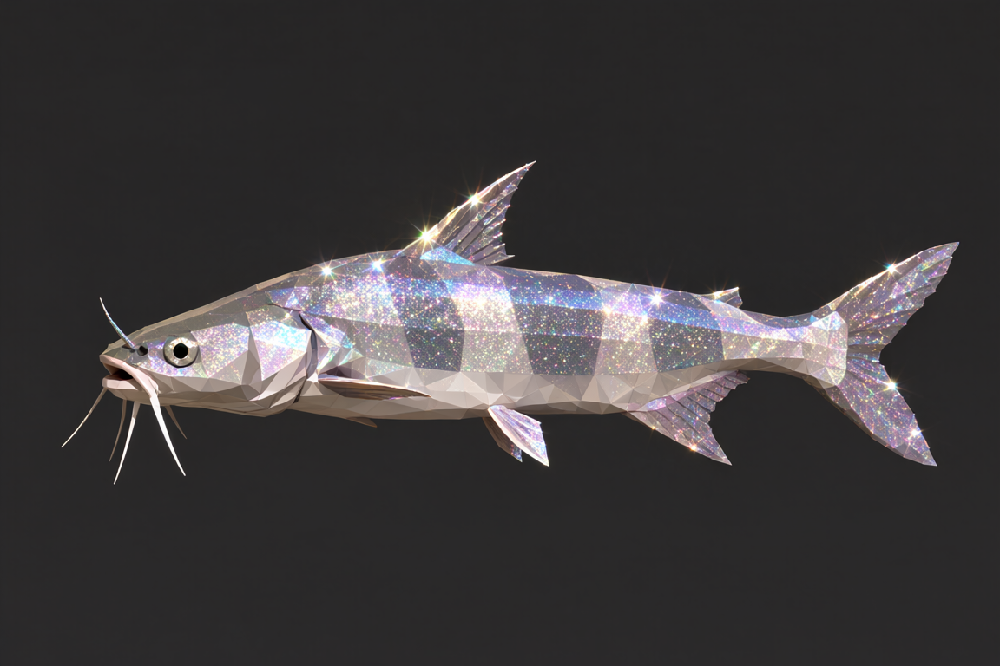

8 步 · 1.15 · 21.7 秒
--steps；模型 Qwen-Image-2.1 int8、1152×768、cfg 3.0。
样本用 D16「塘主的大青鱼」（唯一已出图的传说鱼，4 档都是当前口径）+ D09（稀有）做交叉。
点任意一张图放大到原图（Esc 或点任意处关闭）。| 步数 | 面片密度（靶子 3.6） | 单张耗时（热） | 看这一张 |
|---|---|---|---|
| 8 | 1.15 —— 崩：闪粉与低模面片都没画出来 | 21.7 秒 | 一眼就是另一条鱼 |
| 25（现状） | 2.17 | 51.8 秒 | 闪粉 + 面片都在 |
| 40 | 2.36（只 +9%） | 约 80 秒 | 与 25 步几乎分不出 |
| 60 | 2.29（−3%，已到平台） | 115.0 秒 | 与 40 步几乎分不出 |








(58,58,60)）再比，
否则背景检测会把两组数字搅在一起。同槽位 25 步的「盘上 vs 现跑」只差 1.4% —— 量法可信。large / minimal → dense triangular polygon mesh 把密度从 1.5 拉到 3.3（靶子 3.6）docs/画风与颜色标准.md §7.4；单张原图与本页一起放在
docs/images/card-ab/steps-ab-*.png；完整结论与实测过程见 docs/改进待办.md 与队列 Q29。